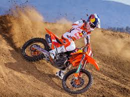
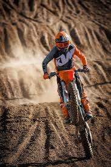
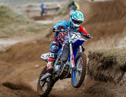
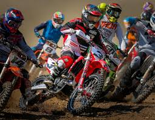
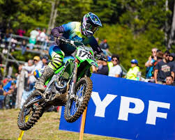

¿Qué es el motocross?
El motocross es un deporte extremo que involucra carreras de motocicletas especialmente diseñadas para terrenos accidentados, como pistas de tierra con obstáculos naturales y artificiales. Los competidores deben navegar a través de saltos, baches, curvas cerradas y otros desafíos mientras intentan completar un número determinado de vueltas en el menor tiempo posible. Es una disciplina muy exigente física y técnicamente, que requiere habilidades de manejo excepcionales, así como fuerza y resistencia. El motocross se practica tanto a nivel amateur como profesional, y es popular en todo el mundo.
Historia
La historia del motocross se remonta a los primeros días del siglo XX en Europa, especialmente en el Reino Unido y Francia. Lo que comenzó como competiciones informales en terrenos irregulares y circuitos naturales, pronto se convirtió en un deporte organizado y en rápido crecimiento. Con el tiempo, los pilotos desarrollaron técnicas especializadas para navegar por terrenos difíciles, mientras que las motocicletas evolucionaron con características diseñadas específicamente para el desafío del off-road. Las competiciones se hicieron más populares y se establecieron federaciones nacionales e internacionales, junto con campeonatos de renombre como el Campeonato Mundial de Motocross de la FIM. El motocross se expandió por todo el mundo, atrayendo a millones de fanáticos y convirtiendo a los pilotos en verdaderas celebridades. A lo largo de los años, ha experimentado numerosas innovaciones técnicas y avances en seguridad, manteniendo su lugar como uno de los deportes más emocionantes y desafiantes del mundo del motor.
Galería
   Eventos
Primera fecha del nacional 07/01 Tucuman
Segunda fecha del nacional 10/02 Salta
Tercera fechadel nacional 06/03 Chubut
MXGP Mundial de motocross 14/04 Neuquen
Contacto
Para más información sobre el motocross, contáctanos en: solomotos@gmail.com
Tambien te podes comunicar al: 3785065103